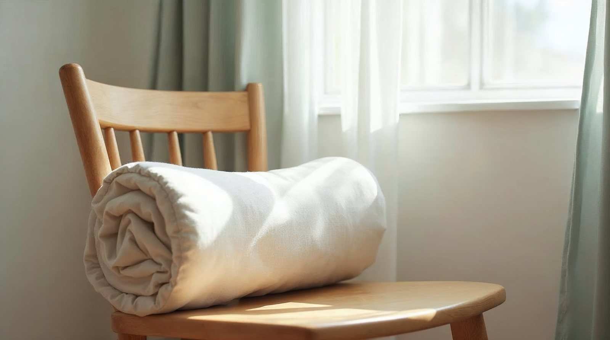
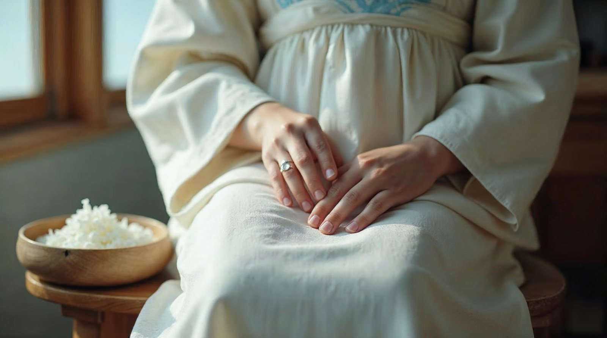
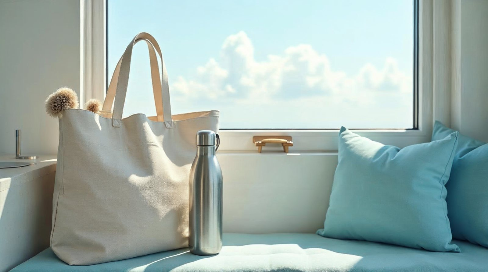
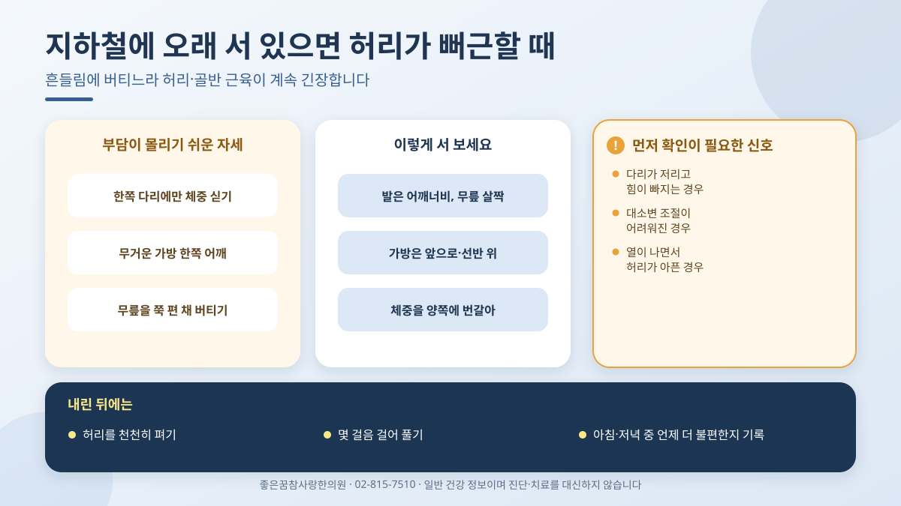

이종호 한의사 감수좋은꿈참사랑한의원 대표원장 (한의사 면허번호 19769)발행 2026-11-24 · 수정 2026-11-26
이 글의 차례
- 왜 이런 불편이 생길 수 있나요
- 지하철 허리 뻐근함은 사람마다 어떻게 다른가요?
- 왜 퇴근길에 허리가 더 무거울까요?
- 먼저 이렇게 여쭙니다
- 하루 중 언제 아픈지가 왜 중요할까요?
- 상황별 예시
- 스스로 점검해 보세요
- 일상에서 먼저 해 볼 수 있는 것
- 흔들리는 지하철 안에서 이렇게 서 보세요
- 출퇴근 앞뒤로 해 볼 수 있는 것
- 가방은 어떻게 메면 좋을까요?
- 도착한 뒤 앉는 자세도 중요할까요?
- 추나는 어떤 경우에 함께 정하나요?
- 한의원에서 함께 살필 수 있는 경우
- 추운 날 출근길에는 무엇을 더 챙길까요?
- 얼마나 지켜보고 언제 상담할까요
- 잠자리에서 허리를 쉬게 하려면?
- 다시 오시면 무엇을 이어서 보나요?
- 이렇게 기록해 오시면 상담이 쉬워집니다
- 이런 증상은 먼저 확인이 필요합니다
흔들리는 지하철에서는 발을 어깨너비로 벌리고 무릎을 살짝 굽혀 서면 허리가 버티는 부담을 조금 나눌 수 있습니다. 붐비는 출퇴근 지하철에서 손잡이를 잡고 한쪽 다리에 기대 서 있다 보면 내릴 즈음 허리가 묵직하다는 분이 많습니다.
내리고 나서 조금 걸으면 풀리는 뻐근함이라면 서는 자세와 가방부터 바꿔 볼 수 있습니다. 출근길마다 같은 자리가 아프고 다음 날 아침까지 남거나, 엉덩이와 다리까지 당기기 시작했다면 한 번 살펴보시는 것이 좋습니다.
왜 이런 불편이 생길 수 있나요
- 차량이 흔들릴 때마다 균형을 잡느라 허리와 골반 주변 근육이 계속 긴장하게 됩니다.
- 한쪽 다리에 체중을 싣고 서는 습관은 골반을 기울게 해 허리 한쪽에 부담이 몰릴 수 있습니다.
- 무거운 가방을 한쪽 어깨에 메면 몸통이 반대쪽으로 버티느라 허리가 더 피곤해지기도 합니다.
- 전날 잠이 부족하거나 오래 앉아 지낸 날에는 같은 출근길도 더 힘들게 느껴질 수 있습니다.
- 손잡이를 잡으려 팔을 들고 있으면 어깨와 등이 함께 긴장해, 몸통 전체가 굳은 채로 흔들림을 버티게 됩니다.
- 휴대폰을 보느라 고개를 숙이고 서 있으면 상체가 앞으로 쏠려 허리 뒤쪽 근육이 그만큼 더 일을 합니다.
지하철 허리 뻐근함은 사람마다 어떻게 다른가요?
출퇴근길 허리 불편이라고 해도 아픈 자리와 모양을 들어 보면 서로 다릅니다. 저는 손으로 아픈 곳을 짚어 달라고 하고, 언제 시작해 언제 풀리는지를 나눠 여쭙습니다.
- 허리 아래쪽 양옆이 넓게 묵직하고 내려서 걸으면 풀린다면, 오래 서서 균형을 잡느라 근육이 지친 경우가 많습니다.
- 한쪽 허리와 엉덩이 위쪽만 뻐근하다면 한쪽 다리에 기대 서는 습관이나 한쪽으로 메는 가방을 함께 봅니다.
- 오래 서 있을수록 엉덩이와 다리가 저리고, 잠시 앉거나 허리를 숙이면 편해진다면 허리 신경이 지나는 길이 좁아지는 경우와 나눠 살핍니다.
- 허리를 숙일 때나 기침할 때 다리로 찌릿하게 뻗친다면 허리 디스크 쪽을 함께 확인합니다.
- 아침에 일어날 때 허리가 뻣뻣하고 움직이면 오히려 풀리는 날이 몇 달째 이어진다면 다른 원인도 함께 확인해 봅니다.
같은 사람에게 두 가지가 섞여 있기도 합니다. 그래서 말로 듣는 것과 함께 실제로 서 보고, 숙이고, 젖혀 보는 진찰을 거쳐 살필 곳을 정합니다.
왜 퇴근길에 허리가 더 무거울까요?
출근길보다 퇴근길에 허리가 더 무겁다는 분이 많습니다. 하루 동안 앉아 있던 자세 그대로 허리 주변 근육이 굳어 있고, 몸 전체의 피로가 쌓인 상태에서 다시 흔들림을 버텨야 하기 때문입니다.
한의학에서는 피로가 쌓이고 몸이 차가워진 저녁에 근육이 더 쉽게 뭉치고 기혈의 흐름이 느려진다고 봅니다. 그래서 허리 통증과 함께 하루 중 언제 가장 지치는지, 손발이 차거나 잠을 설치지는 않는지도 함께 여쭙습니다.

먼저 이렇게 여쭙니다
- 지하철에서 서 있는 시간이 얼마나 되나요?
- 주로 한쪽 다리에 체중을 싣고 서나요?
- 가방은 어떻게 메고 다니나요?
- 허리 통증이 다리로 내려가는 느낌이 있나요?
- 내리고 나서 얼마나 걸으면 뻐근함이 풀리나요?
- 출근길과 퇴근길 중 언제 더 불편한가요?
- 회사나 학교에서는 하루 몇 시간 정도 앉아 있나요?
- 예전에 허리를 삐끗하거나 허리 진단을 받은 적이 있나요?
하루 중 언제 아픈지가 왜 중요할까요?
같은 허리 뻐근함이라도 아픈 시간대에 따라 살필 곳이 달라집니다. 출근길에만 아프고 회사에 도착해 조금 걸으면 풀린다면 서 있는 자세와 흔들림에 버티는 습관을 먼저 봅니다.
반대로 하루 종일 앉아 있다가 퇴근길에 더 심하다면 앉는 자세와 쉬는 간격을 먼저 봅니다. 아침에 일어날 때부터 뻣뻣하다면 잠자리와 전날의 피로를 함께 살핍니다. 그래서 저는 아픈 시간을 기록해 오시도록 부탁드리고, 그 흐름을 보며 무엇부터 바꿀지 순서를 정합니다.
상황별 예시
- 예를 들어 집에서 회사까지 한 시간 가까이 서서 가고, 회사에서는 종일 앉아 있는 직장인의 경우, 출근길에 이미 지친 허리가 하루 내내 굽은 채로 있어 퇴근길에 더 뻐근해질 수 있습니다. 출근 뒤 자리에 앉기 전에 2~3분 허리를 펴고 걷는 시간을 넣어 볼 수 있습니다.
- 예를 들어 노트북과 책이 든 가방을 한쪽 어깨에 메고 붐비는 지하철에서 한 손으로 손잡이를 잡는 경우, 몸이 가방 반대쪽으로 기울어 한쪽 허리만 뻐근해지기 쉽습니다. 가방을 앞으로 메거나 선반에 올리는 것부터 바꿔 볼 수 있습니다.
- 예를 들어 환승역 계단을 서둘러 오르내린 뒤 다시 서서 가는 경우, 숨이 찬 채로 몸에 힘이 들어가 허리가 더 굳기도 합니다. 환승할 때는 한두 대를 보내더라도 천천히 걷는 쪽을 권합니다.
스스로 점검해 보세요
- 지하철에서 서 있는 시간이 30분을 넘는다
- 서 있을 때 한쪽 다리에 체중을 싣는 습관이 있다
- 가방을 늘 같은 쪽 어깨에 멘다
- 서서 가는 동안 고개를 숙이고 휴대폰을 본다
- 내린 뒤 허리를 펴기까지 시간이 걸린다
- 회사나 학교에서 하루 여섯 시간 넘게 앉아 있다
세 가지 이상 해당된다면 서는 자세와 가방부터 바꿔 보세요. 바꾼 뒤에도 같은 자리가 계속 불편하다면 진료 때 이 목록을 함께 보며 이야기를 나누면 좋습니다.
일상에서 먼저 해 볼 수 있는 것
- 발을 어깨너비로 벌리고 무릎을 살짝 굽혀 서기
- 가방은 앞으로 메거나 선반에 올리기
- 체중을 양쪽 다리에 번갈아 싣기
- 내린 뒤 허리를 천천히 펴고 몇 걸음 걷기
- 붐비는 시간을 조금 피할 수 있다면 한두 대 늦춰 기둥이나 벽 옆 자리 잡기
흔들리는 지하철 안에서 이렇게 서 보세요
사람은 서서 걷기 때문에 허리 아래쪽에 늘 체중이 실립니다. 흔들리는 차 안에서는 그 부담이 더해지니, 서 있는 자세를 몇 가지만 신경 써 보세요. 처음에는 의식해야 하지만 며칠 지나면 습관이 됩니다.
- 발은 어깨너비로 벌리고, 한 발을 반 걸음 앞에 두어 앞뒤 흔들림에 대비하기
- 무릎은 꼿꼿이 펴서 잠그지 말고 살짝 풀어 두기
- 손잡이는 팔을 쭉 뻗어 매달리기보다 팔꿈치를 살짝 굽혀 잡을 수 있는 위치 고르기
- 기둥이나 출입문 옆 벽에 등을 살짝 기대 허리 부담 나누기(출입문에는 기대지 않기)
- 휴대폰은 눈높이 가까이 들어 고개를 덜 숙이기
- 역마다 체중을 싣는 다리를 바꾸기
서서 휴대폰을 보다 목과 어깨까지 굳는다면 상도역에서 지하철로 출퇴근하며 서서 휴대폰을 보다 보면 목과 어깨가 굳을 때는 어떻게 살피나요?도 함께 읽어 보세요.
출퇴근 앞뒤로 해 볼 수 있는 것
지하철 안에서 할 수 있는 일에는 한계가 있어서, 타기 전과 내린 뒤 몇 분을 쓰는 것이 도움이 됩니다.
- 집을 나서기 전 무릎을 가슴 쪽으로 번갈아 당기고, 허리를 좌우로 가볍게 돌리기
- 역까지 걸을 때 보폭을 조금 넓게 하고 팔을 자연스럽게 흔들며 걷기
- 퇴근 뒤에는 샤워할 때 따뜻한 물로 허리를 충분히 데우기
모든 동작은 아프지 않은 범위에서만 합니다. 동작 중에 다리로 찌릿한 느낌이 오면 그 동작은 멈추고 진료 때 알려 주세요.
가방은 어떻게 메면 좋을까요?
출퇴근 가방은 생각보다 무겁습니다. 노트북, 충전기, 물병, 도시락까지 넣으면 몇 킬로그램이 되기도 하는데, 이 무게를 한쪽 어깨로 버티면 몸통이 반대쪽으로 기울어 허리 한쪽에 부담이 몰립니다.
- 백팩이라면 양쪽 끈을 모두 메고, 붐비는 지하철에서는 앞으로 돌려 메기
- 끈은 가방이 등 위쪽에 붙도록 짧게 조여 엉덩이 쪽으로 처지지 않게 하기
- 숄더백이라면 역마다 메는 쪽을 바꾸거나, 크로스로 메어 무게를 몸 가운데로 모으기
- 자리가 있다면 선반에 올려 두기
- 매일 들고 다니지 않아도 되는 물건은 회사나 학교에 두고 다니기
일주일에 한 번 가방을 비워 무게를 확인해 보세요. 한쪽으로 메는 가방이 어깨에 남기는 흔적은 무거운 가방을 한쪽 어깨로만 메고 다니면 어깨 높이가 달라 보일 때는?에 따로 적어 두었습니다.
도착한 뒤 앉는 자세도 중요할까요?
출근길에 지친 허리로 자리에 앉아 몇 시간씩 같은 자세로 있으면 퇴근길에는 더 굳은 상태로 다시 지하철에 오르게 됩니다. 서 있는 시간과 앉아 있는 시간은 이어져 있어서, 회사나 학교에서의 자세도 함께 보는 것이 좋습니다.
- 엉덩이를 의자 깊숙이 넣고 허리를 등받이에 붙여 앉기
- 모니터는 눈높이에 맞춰 고개를 숙이지 않게 하기
- 한 시간에 한 번은 일어나 물을 마시거나 화장실을 다녀오기
- 다리를 꼬지 않고 두 발을 바닥에 나란히 두기
퇴근 전 10분 정도 계단을 천천히 걷거나 허리를 가볍게 펴 두는 것도 해 볼 만합니다. 앉아 있을 때 허리가 아픈 쪽이 더 크다면 오래 앉아 있으면 허리가 아플 때 한의원에서는 무엇을 먼저 묻나요?도 함께 읽어 보세요.
추나는 어떤 경우에 함께 정하나요?
추나는 한의사가 손으로 척추와 골반, 주변 근육과 관절의 움직임을 살피고 조정하는 수기요법입니다. 서 있는 습관 때문에 골반 높이가 달라 보이거나, 허리를 돌리고 숙일 때 한쪽이 유난히 뻣뻣한 경우에 함께 고려합니다.
다만 모든 분께 같은 방법을 쓰지는 않습니다. 진찰에서 아픈 동작과 근육의 긴장, 다리 저림 여부를 확인한 뒤 추나가 지금 상태에 맞는지, 침이나 온열 같은 다른 방법을 먼저 쓸지 함께 정합니다.
골다공증이 있거나 최근 수술·골절이 있었다면 먼저 말씀해 주세요. 받는 중에 불편하면 바로 말씀해 주시면 세기를 줄입니다.

한의원에서 함께 살필 수 있는 경우
- 오래 서 있은 뒤 허리가 뻐근한 경우 서 있는 자세와 골반의 균형을 함께 살핍니다.
- 허리와 함께 엉덩이나 다리가 당기는 경우 허리와 골반을 함께 살핍니다.
- 출퇴근 뒤 허리 뻐근함이 다음 날 아침까지 남는 경우 잠자리 자세와 생활 습관을 함께 살핍니다.
좋은꿈참사랑한의원에서는 모든 분께 맥부터 짚으며 불편한 자세와 동작을 여쭙고, 척추와 골반의 균형, 근육의 긴장을 살핍니다. 출퇴근 시간과 서 있는 시간, 가방, 하루 앉아 있는 시간도 함께 듣습니다.
그다음 서 있는 모습에서 골반의 좌우 높이를 먼저 보고 허리의 앞뒤 곡선을 살핀 뒤, 허리를 숙이고 젖히고 돌릴 때 어디가 불편한지 확인합니다. 다리로 당기는 느낌이 있다면 다리를 들어 올리는 동작과 감각, 힘을 함께 보고, 필요하다고 판단될 때 초음파로 아픈 부위를 살핍니다.
그 결과를 바탕으로 추나와 침 등을 상태에 맞춰 정하고, 귀가 전에는 생활에서 바꿔 볼 자세와 다음에 확인할 점을 알려 드립니다.
추운 날 출근길에는 무엇을 더 챙길까요?
겨울 아침에는 차가운 바깥 공기를 맞으며 역까지 걷고, 난방이 된 지하철 안에서 두꺼운 외투를 입은 채 서 있게 됩니다. 몸이 움츠러든 상태에서 허리 주변 근육이 굳기 쉽고, 외투 무게까지 더해져 같은 시간을 서 있어도 더 뻐근하게 느끼기 쉽습니다.
- 허리와 아랫배를 덮는 내복이나 얇은 조끼로 허리를 따뜻하게 하기
- 외투 주머니에 무거운 물건을 넣지 않기
- 집을 나서기 전 따뜻한 물을 한 잔 마시고 가볍게 몸을 움직여 두기
- 빙판길에서는 보폭을 줄이고 발바닥 전체로 디디며 걷기
추운 날과 덜 추운 날의 허리 느낌을 기록해 두시면, 몸이 찬 정도가 허리에 얼마나 영향을 주는지 함께 살펴볼 수 있습니다. 저는 잘 먹고, 잘 싸고, 잘 자고, 마음 편하고, 몸 따뜻하게, 이 다섯 가지를 몸이 회복하는 바탕으로 보는데, 겨울 출근길에는 그중 '몸 따뜻하게'부터 챙겨 보시길 권합니다.
얼마나 지켜보고 언제 상담할까요
- 서는 자세와 가방 메는 방법을 바꾼 뒤 1~2주는 출퇴근 뒤 허리가 어떤지 지켜보세요.
- 2~3주가 지나도 같은 자리가 계속 뻐근하거나 다음 날 아침까지 남는다면 상담을 권합니다.
- 엉덩이나 다리로 당기는 느낌이 생겼다면 2~3주를 채우지 말고 일찍 진료를 받아 보세요.
잠자리에서 허리를 쉬게 하려면?
출퇴근 뒤의 뻐근함이 다음 날 아침까지 남는다면 잠자리도 함께 살펴볼 만합니다. 밤사이 허리가 제대로 쉬지 못하면 다음 날 출근길이 처음부터 무겁게 시작되기 때문입니다.
- 바로 누울 때는 무릎 아래에 쿠션을 받쳐 허리가 뜨지 않게 하기
- 옆으로 누울 때는 무릎 사이에 베개를 끼워 골반이 비틀리지 않게 하기
- 너무 푹 꺼지는 매트리스라면 허리가 가라앉지 않는지 살펴보기
- 아침에 일어날 때는 옆으로 돌아누운 뒤 팔로 바닥을 밀며 천천히 일어나기
다시 오시면 무엇을 이어서 보나요?
다시 오시면 맥을 다시 짚으며, 지난번에 정한 서는 자세와 가방 메는 방법을 해 보니 어땠는지, 출퇴근 뒤 허리 느낌은 어떤지부터 여쭙습니다. 그다음 처음에 불편했던 동작을 같은 방법으로 다시 해 보며 비교합니다.
출퇴근 경로가 바뀌거나 업무가 바빠져 앉아 있는 시간이 늘었다면 그런 변화도 알려 주세요. 생활의 변화에 맞춰 자세 요령과 치료 방법을 함께 조정합니다.

이렇게 기록해 오시면 상담이 쉬워집니다
- 출퇴근 중 서 있는 시간과 환승 횟수
- 가방 무게와 메는 방법
- 허리 통증이 엉덩이나 다리로 내려가는지, 어느 쪽인지
- 아침과 저녁 중 언제 더 불편한지
- 내린 뒤 뻐근함이 풀리기까지 걸리는 시간
- 회사나 학교에서 앉아 있는 시간과 의자 상태
- 예전에 받은 허리 영상 검사 결과가 있다면 그 결과
- 서는 자세나 가방 메는 방법을 바꾼 날과 그대로 둔 날의 허리 느낌 차이
붐비는 지하철에서 하루를 시작하고 또 그렇게 하루를 마치는 일, 매일 반복되니 더 지치실 겁니다. 내일 아침에는 발을 어깨너비로 벌리고 무릎을 살짝 푸는 것 하나만 기억해 보세요. 다음에 오시면 출근길과 퇴근길 중 언제 더 힘드셨는지부터 여쭙겠습니다.
이런 증상은 먼저 확인이 필요합니다
- 허리 통증과 함께 다리 힘이 점점 빠지는 경우
- 대소변 조절이 어렵거나 엉덩이·사타구니 감각이 둔해진 경우
이런 신호가 있으면 한의원보다 가까운 병원이나 응급실을 먼저 찾으세요.

여쭙는 것
- 지하철에서 서 있는 시간이 얼마나 되나요?
- 주로 한쪽 다리에 체중을 싣고 서나요?
- 가방은 어떻게 메고 다니나요?
생활에서 해 볼 것
- 발을 어깨너비로 벌리고 무릎을 살짝 굽혀 서기
- 가방은 앞으로 메거나 선반에 올리기
- 체중을 양쪽 다리에 번갈아 싣기
한의원에서 함께 살필 것
- 오래 서 있은 뒤 허리가 뻐근한 경우 서 있는 자세와 골반의 균형을 함께 살핍니다.
- 허리와 함께 엉덩이나 다리가 당기는 경우 허리와 골반을 함께 살핍니다.
- 출퇴근 뒤 허리 뻐근함이 다음 날 아침까지 남는 경우 잠자리 자세와 생활 습관을 함…
먼저 확인이 필요한 신호
- 허리 통증과 함께 다리 힘이 점점 빠지는 경우
- 대소변 조절이 어렵거나 엉덩이·사타구니 감각이 둔해진 경우
한눈에 보는 표
| 구분 | 핵심 |
|---|---|
| 여쭙는 것 | 지하철에서 서 있는 시간이 얼마나 되나요? 주로 한쪽 다리에 체중을 싣고 서나요? |
| 생활에서 해 볼 것 | 발을 어깨너비로 벌리고 무릎을 살짝 굽혀 서기 가방은 앞으로 메거나 선반에 올리기 |
| 한의원에서 함께 살필 것 | 오래 서 있은 뒤 허리가 뻐근한 경우 서 있는 자세와 골반의 균형을 함께 살핍니다. 허리와 함께 엉덩이나 다리가 당기는 경우 허리와 골반을 함께 살핍니다. |
| 먼저 확인이 필요한 신호 | 허리 통증과 함께 다리 힘이 점점 빠지는 경우 대소변 조절이 어렵거나 엉덩이·사타구니 감각이 둔해진 경우 |
자주 묻는 질문
서서 가는 게 앉는 것보다 허리에 안 좋나요?
어느 한쪽이 나쁘다기보다 한 자세로 오래 있는 것이 부담이 될 수 있어, 자세를 자주 바꾸는 것을 권합니다.
추나는 몇 번 받아야 하나요?
사람마다 다르며, 진찰 후 상태와 반응을 보며 함께 정합니다.
진료 시간은 어떻게 되나요?
좋은꿈참사랑한의원은 평일 09:30~20:00(점심 13:00~14:00), 토·일·공휴일 09:30~15:00에 진료합니다.
좋은꿈참사랑한의원은 재진 때 지난번 이야기부터 이어서 여쭙니다. 진료시간과 예약은 오시는 길에서 확인하세요.
어디서 상담받을 수 있나요?
좋은꿈참사랑한의원은 서울 동작구 만양로2길 2 신성빌딩 3층·5층(서울 동작구 상도동, 7호선 상도역 3번 출구 근처)에 있습니다. 한의사 3명(이종호 대표원장, 조영기 수석진료원장, 정원영 진료원장)이 진료합니다. 진료시간은 평일 09:30~20:00(점심 13:00~14:00), 토·일·공휴일 09:30~15:00이며, 방문 전 전화로 확인을 권합니다. 예약은 네이버 예약, 카카오톡 상담, 전화 02-815-7510로 받습니다.
이 글은 일반적인 건강 정보이며 개인의 진단이나 치료를 대신하지 않습니다. 증상이 있거나 복용 중인 약이 있다면 진료를 통해 확인하세요. 치료 효과는 개인마다 다를 수 있습니다.
작성 기준: 일반적으로 알려져 있는 건강 정보를 참고해 정리했습니다(대표원장 감수). 증상 기록은 1~2주 동안 하루 1회, 비슷한 시간에 적어 오시면 지난 상태와 비교하기 쉽습니다.